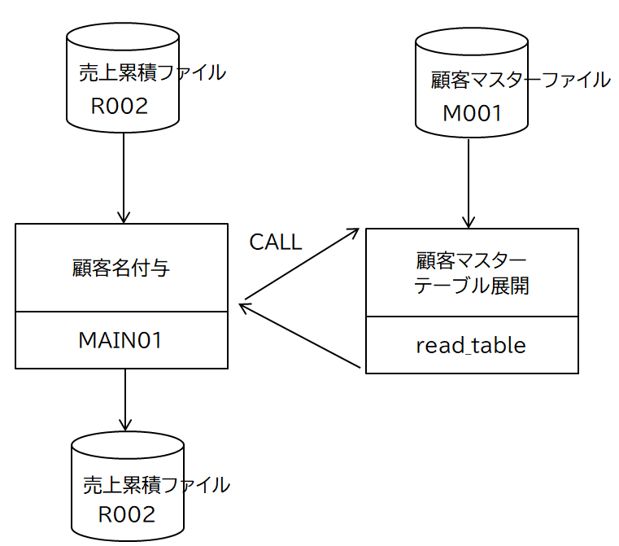

処理パターン(５)
C言語で作成した外部サブプログラム呼ぶ
『処理パターン(４) 外部サブプログラム呼ぶ』のサブプログラムをC言語で作成してみる。
入出力構成図
呼び出すCOBOLプログラムのインタフェースに変更はない。

ソースコード
メインプログラム
MAIN01.cbl
顧客マスタテーブルの有効件数を数値項目（COMP-X）として定義する。これを引数にして Cプログラムに渡すと、数値項目の桁数によりC側での整数の大きさ（1バイト、2バイト、4バイト、8バイト）が自動的に決まる。
サブプログラム
sublib.cなぜかエンディアンの変換が必要
COBOL側はBig Endianだが、C言語側はLittle Endianになっている。引数の数値項目を整数値（COMP-X）とした場合、受け渡しのつどエンディアンの変換を行う必要がある。
エンディアンの変更は、単純なバイトスワップで良い。GNU Cライブラリに byteswap.hにマクロが定義されているのだが、OSXのライブラリにはなぜかないので、自身で実装している。